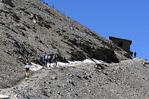
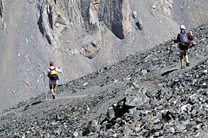
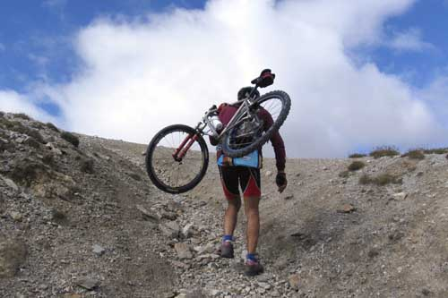

La Batteria dello Chaberton
Escursione

Nel periodo che và da giugno a fine settembre se le condizioni meteorologiche sono buone è possibile salire a piedi in vetta allo Chaberton (3130m), ci sono quattro possibili percorsi, tre solo a piedi, un quarto, il più lungo oltre che a piedi è possibile percorrerlo anche in mountain bike con difficoltà. Tutti i punti di partenza sono facilmente raggiungibili dalla SS 24, per poi parcheggiare il mezzo e partire a piedi per l'escursione.
I percorsi sono indicati per la maggioranza delle persone, si svolgono nella quasi totalità su strade sterrate militari e su mulattiere sempre tracciate nel periodo bellico. Nel percorsi (1) e (2) non si incontrano difficoltà alpinistiche, è però sempre necessario avere delle buone scarpe da montagna e prestare attenzione a dove si mettono i piedi, specialmente se si entra all'interno delle opere fortificate. E' necessario avere acqua, almeno 1,5l a testa, perchè nel periodo estivo oltre il Colle Chaberton non è possibile trovare acqua sorgiva. E' consigliabile avere abbigliamento da montagna e non sottovalutare la salita.
PERCORSI DI SALITA AL MT. CHABERTON vedi mappa Chaberton
{kind=link}
1) Salita dalla strada ex militare che parte da Fenils (il più lungo, oltre 13km) percorribile a piedi senza grandi problemi in quanto la pendenza non è mai ripida, la parte bassa è in buona parte percorribile in mountain bike ma è definita da ciclisti esperti quasi impossibile dal Vallone dei Morti fino alla vetta. (5/7 ore dislivello 1700mt)
2) Percorso Claviere - Vallone Rio Secco percorso classico (il più facile a piedi), la maggior parte delle persone salgono su questa via, partendo a piedi da Claviere oppure parcheggiando la vettura dopo la dogana francese. (3/4 ore dislivello 1300mt)
3) Percorso Petit Vallon - Ferrata (il più corto, ma anche il più difficile) è necessaria una preparazione base alpinistica per affrontare l'ultima parte. Il percorso si presenta molto più panoramico rispetto alle salite n.1 e n.2 in quanto si svolge sulla cresta sud che sovrasta Cesana. (3/5 ore dislivello 1450mt) Attenzione per imboccare il sentiero dopo il paravalanghe non esiste più la scalinata, adesso c'è un cantiere, non è facile trovare un passaggio.
4) Un alternativa ai primi tre percorsi può essere la mulattiera della Cresta Nera, che parte direttamente da Cesana, dietro la Caserma dei CC e sale molto ripida fino a intersecare la ex strada militare di Fenils. (4/5 ore) Difficile e poco battuta fino all'osservatorio della Cresta Nera, poi prosegue sulla militare del percorso 1. (4/5 ore dislivello 1600mt)
Tutti i percorsi iniziano sul territorio italiano per poi proseguire in territorio francese. Si segnalano verifiche e controlli da parte della gendarmeria francese, evitare di portare a valle oggetti ritrovati dentro e nei dintorni della batteria Chaberton.


Sempre validi i consigli e le precauzioni citati nella pagina FORTIFICAZIONI
[home]
È
vietato ogni utilizzo non autorizzato delle foto e video.
Photos and videos are copyright © Roberto Chirio: all rights reserved.